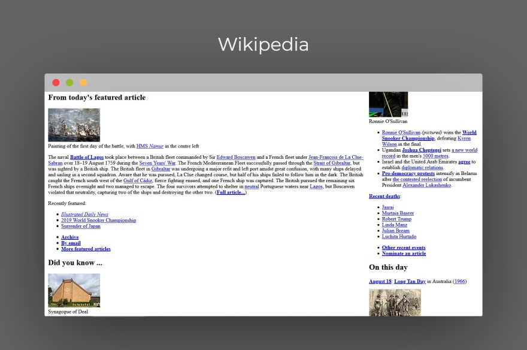
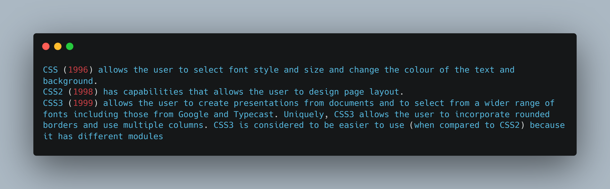

## A history of CSS ``` h1 { color: red; font-size: 5em; } p { color: black; } ``` --- ## Web page without CSS  --- ## Why do we need CSS? --- ## Using CSS allows a user to specify: <ul> <li class="font">Fonts</li> <li><span class="color">Colour of text</span> and <a class="color" href="#">links</a></li> <li class="background">Use colours in the text’s background</li> <li>Where and how boxes within the content look and are placed</li> <li>CSS also improves user <b>accessibility</b>, <b>efficiency</b>, <b>flexibility</b> and <b>ensures browser compatibility</b></li> </ul> --- ## Who invented CSS? --- ## The Arena web browser <img src="https://upload.wikimedia.org/wikipedia/commons/d/d3/Arena_%28web_browser%29_screenshot.png"> --- ## What is the difference between CSS1, CSS2 and CSS3?  --- ## Advantages of Cascading Style Sheet <ul style="color: lightgreen"> <li>Web pages are easier to load and use less bandwidth</li> <li>A CSS style sheet compliments well with HTML</li> <li>Device Compatibility</li> <li>Ability to Re-Position</li> <li>Wider Design Variety</li> </ul> --- ## Disadvantages of CSS <ul style="color: red"> <li>Come in different levels</li> <li>Fragmentation</li> <li>Lack of security</li> </ul> --- ## Finally, where would we be without CSS? --- <img src="https://media2.giphy.com/media/oncuBD9AtSUEg/giphy.gif?cid=ecf05e475usklozkjrpshpvavm12yxdtow4x49oexa110t11&rid=giphy.gif&ct=g"> Thanks for your attention!